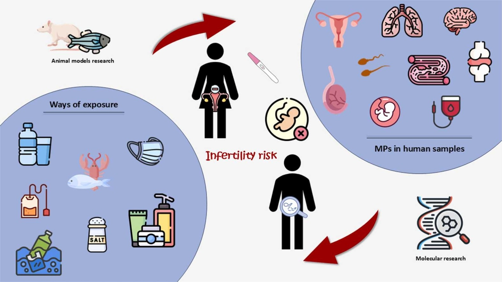

In short, yes.
Microplastics are notoriously gaining attention on social media after Netflix released a documentary in early 2026 about its consequences on fertility. But what are they, and how do they make such a large impact on reproduction?

Microplastics in the Body & Exposure
The U.S. Environmental Protection Agency, or EPA, defines microplastics as “plastic particles ranging in size from 5 millimeters, which is about the size of a pencil eraser, to 1 nanometer.”
There are two major types: primary and secondary. Primary microplastics are intentionally manufactured in small sizes for their use in consumer products, such as cosmetics or biomedical products. Secondary microplastics are plastic particles that break down from larger plastic materials, such as food wrapping, tires and synthetic textiles.
Microplastics are ubiquitous – they are everywhere in the world, from Antarctica tundras to McDonald’s burgers to household tupperware. They contain chemicals like BPA (Bisphenol A), phthalates, and PFAs, also known as forever chemicals. Prior research links microplastics to health issues such as inflammation, oxidative stress, and DNA damage, even raising the risk of heart attacks, strokes, and neurological conditions.
Recent research explores the role of microplastics in women’s health, specifically fertility. In "Microplastics and human fertility: A comprehensive review of their presence in human samples and reproductive implication," researchers found that microplastics are found in the placenta, breast milk, and male reproductive fluid.
Reproductive endocrinologist Aimee Browne, MD explains that "endocrine-disrupting chemicals, including bisphenols and phthalates, have been shown in animal and laboratory studies to affect hormone regulation, metabolism and reproductive function." She suggests making some quick swaps, especially in the kitchen – swapping out single-use plastics already makes a huge difference.
Desiree LaBeaud, MD is a pediatrics infectious diseases physician at Stanford Medicine who has studied the role of microplastics in child development. LaBeaud determines “we’re born pre-polluted” because microplastics are detected in so many organs and tissues, including urine, breastmilk, semen and meconium, which is a newborn's first stool.
Human research can only show us where microplastics end up – it can't ethically test what happens when exposure increases, since researchers can't deliberately expose people and watch the results.
But animal studies can.
A systematic review of 15 experimental studies on female reproductive health found that microplastic exposure impaired ovarian function, lowered fertility rates, and disrupted hormone levels, with effects extending to embryo development and offspring health. The researchers themselves flagged that study quality varied widely and called for more research before cementing these findings.
The closest thing we have to causal evidence in humans comes from a 2026 review in Human Reproduction, which compiled studies that exposed actual human semen samples to polystyrene microplastics outside the body.
The results are hard to ignore: a time-dependent drop in sperm motility and vitality, reduced genomic stability, increased oxidative stress, and the downregulation of genes needed for fertilization. It's a meaningful step beyond simply detecting plastics in tissue; this is exposure directly causing measurable damage.
Still, a lab dish isn't a living person trying to conceive. All we can conclude for now is plastics can harm reproductive cells, not that they're confirmed to be driving fertility decline in people.
Here are some changes for reducing microplastics in your home:
The honest answer is not black-and-white. Microplastics are showing up everywhere in the body – placenta, semen, ovarian fluid, even a newborn's first stool – and animal studies plus human-tissue lab work show these particles can disrupt hormones, damage sperm, and impair reproductive function. That's not nothing.
But "detected in" and "found to cause harm in controlled settings" still isn't the same as a confirmed, real-world cause of human infertility. Due to the ethical limits on testing exposure in humans, that kind of definitive proof may never fully exist. What we have instead is a consistent, mounting body of evidence pointing in one direction, even if the full picture isn't finished.
So the Netflix-documentary implication of this story – plastics are definitively tanking fertility – oversimplifies what's still an evolving question. The more accurate version: the mechanism is real, the concern is reasonable, and reducing exposure is a smart move either way.